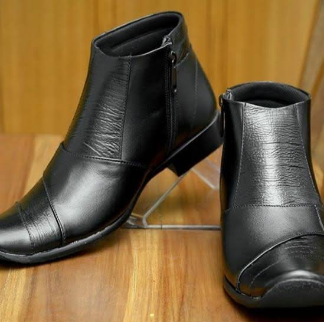
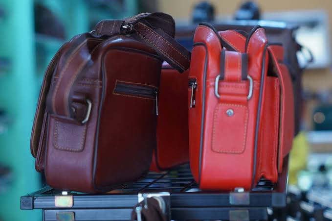
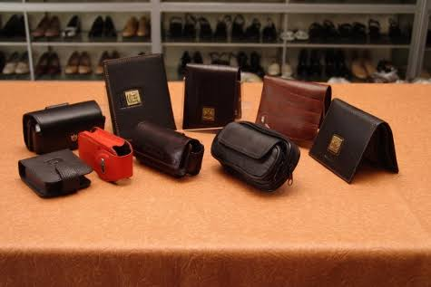
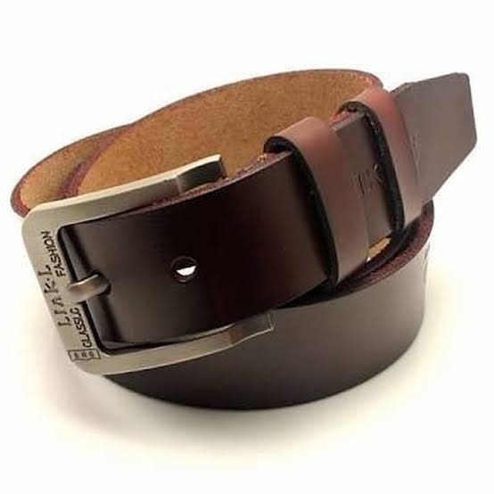

Berikut adalah produk-produk yang dibuat dengan bahan dasar kulit
   Kelebihan produk yang berbahan dasar kulit yaitu :
1.tidak mudah terbakar
2.tahan air
3.lebih tahan lama/awet
Prospek untuk membuat usaha dalam dunia perkulitan terhitung sangat bagus, mengingat banyaknya konsumen yang membutuhkan produk yang berbahan dasar kulit seperti sepatu, tas, ikat pinggang, dompet, dan lain sebagainya. Sebagai contohnya sepatu berbahan dasar kulit banyak diperlukan pekerja baik itu pegawai negeri maupun swasta. Sepatu kulit juga digunakan dalam acara resmi seperti hajatan dll.